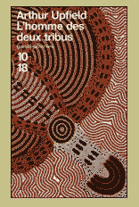
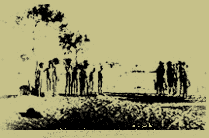

|
|
|
|
|
|
"Easter, le brigadier de
gendarmerie,
fut tiré de son sommeil par la sonnerie du réveil à trois heures
quarante-cinq du matin.
Il dit à sa femme de continuer à dormir, et il passa dans la
cuisine où il alluma la cuisinière à bois et remplit la bouilloire
en fer pour faire chauffer de l'eau. |
|
|
| Quittant la cuisine, il sortit
sur la véranda latérale au moment où le froid qui précède l'aube
ternissait la lueur des étoiles. Là, il regarda en direction
de l'est, guettant le premier signe du passage de l'express
de quatre heures vingt, en provenance de Port Pirie. Au-delà
de la maison, le monde perdait toute forme, toute substance." |
|
|
 |
|
|
|
|
|
|
|
|
| Au sud de l'Australie s'étend une immense plaine
désertique inhospitalière baptisée Nullarbor ("pas d'arbre"). C'est
dans ce décor hostile que Napoléon Bonaparte, inspecteur de la police
de Brisbane, part à la recherche de Myra Thomas, une jeune femme portée
disparue depuis plusieurs semaines. Disparition d'autant plus mystérieuse
que Myra venait d'être acquittée du meurtre de son mari. Selon une
légende aborigène, Ganda, un esprit malin, enlève les jeunes femmes
pour les dévorer. Et nombreux sont ceux qui pensent que le vieux Ganda
vient de commettre un nouveau forfait. Homme de terrain et d'endurance,
Napoléon Bonaparte va emprunter toutes les pistes pour percer ce nouveau
mystère. "Upfield nous entraîne à la suite de son héros, l'inspecteur
Napoléon Bonaparte, dans les paysages du bush australien aussi étranges
que la face cachée de la lune et nous initie aux arcanes de la culture
aborigène. [...] Upfield est le pionnier du polar ethnologique." Tony
Hillerman |
|
|
|
|
|
En 1927, il rencontre un certain Leon Tracker, un métis aborigène
devenu l'un des meilleurs traqueurs de la police d'État du Queensland.
Au moment de se quitter, les deux amis échangent quelques livres
: parmi ceux dont hérite Upfield, une biographie de Napoléon
Bonaparte.

|
|
|
|
| Issu d'un milieu bourgeois, Arthur Upfield est
né en 1888, à Gosport (près de Portsmouth, Angleterre). Élève
médiocre et indiscipliné, ses parents décident de l'envoyer
à l'âge de dix-neuf ans en Australie. Upfield découvre alors
le bush, les immenses plaines semi-désertiques et la vie sauvage.
La guerre venue, il sert en Égypte et en France jusqu'en 1918
où, l'appel du bush devenu trop fort, il décide de retourner
en Australie. Pendant dix ans, il va sillonner le continent,
exerçant ça et là divers métiers de fortune. |
|
|
- L'HOMME DES DEUX TRIBUS
- LA MORT D'UN LAC
- L'EMPREINTE DU DIABLE
- LA LOI DE LA TRIBU
- MORT D'UN TRIMARDEUR
- SINISTRES AUGURES
- L'OS EST POINTÉ
- PAS DE TRACES DANS LE BUSH
- LES SABLES DE WINDEE
- LA BRANCHE COUPÉE
- LE MONSTRE DU LAC FROME
- DU CRIME AU BOURREAU
- ...
Retrouvez tous les titres d'Arthur
Upfield sur le site 10/18 |
|
|
|
|